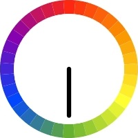
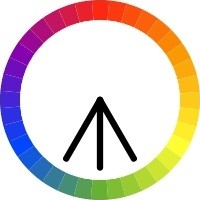
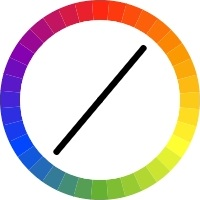
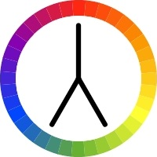
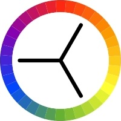

Monochromatic color schemes are easy to create because they use only one color.
Monochromatic schemes use different tones from the same angle on the color wheel (the same hue).
Analogous color schemes are created by using colors that are next to each other on the color wheel.
Hover over an image below to display here.
Complementary schemes are created by combining colors from opposite sides of the color wheel.
Compound schemes (aka Split Complementary) are almost the same as complementary schemes.
Instead of using colors that are opposites, it uses colors on both sides of the opposite hue.
Triadic schemes are made up of hues equally spaced around the color wheel.
